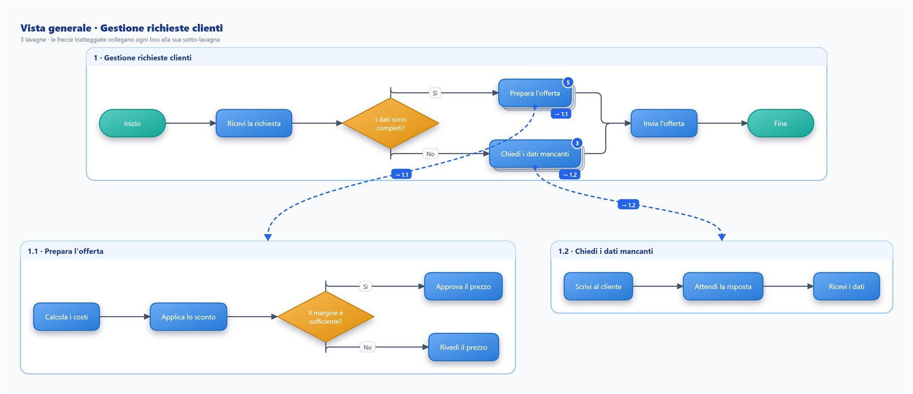
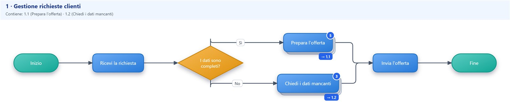

App
Filo
Trova il filo delle tue idee. Una lavagna libera per disegnare flussi, mappe e schemi, da soli o in compagnia.

A cosa serve
Quando un'idea, un processo o un progetto ha bisogno di essere visto per essere capito. Parti da una lavagna vuota e disegni come ti viene, oppure scrivi i passaggi uno per riga e Filo li trasforma in un diagramma. Poi lo sistemi, lo condividi e lo porti con te.
Cosa puoi fare
Disegna e collega
Box, forme, note, icone e frecce che restano agganciate quando sposti i pezzi. Colori e stili per far leggere il flusso a colpo d'occhio.
Genera da testo
Una riga è un passo, una domanda diventa una scelta sì/no. Dal testo nascono flussi, mappe mentali e organigrammi.
Sotto-lavagne
Apri qualsiasi box come lavagna a sé, anche più volte annidata. Quando serve, la vista generale mostra tutto l'insieme.
Immagini nel flusso
Incolla o trascina una foto: viene ridimensionata da sola e la colleghi agli altri elementi come un qualsiasi box.
Condividi
Invita una persona per email, in sola lettura o in modifica, e vedi i cambiamenti quasi in tempo reale. Per mostrare una lavagna a chiunque c'è il link pubblico di sola lettura.
Esporta
Immagine PNG di una lavagna, oppure un archivio ZIP con tutte le lavagne, la vista generale e l'indice. Hai sempre una copia dei tuoi dati in JSON.

Sicura e tua
Ogni lavagna è privata finché non decidi di condividerla.
- Accesso con email e password, più la verifica in due passaggi con la tua app di autenticazione.
- I dati sono ospitati nell'Unione Europea (Irlanda).
- Puoi scaricare i tuoi dati o eliminare l'account in qualsiasi momento, direttamente dall'app.
- Maggiori dettagli nell'informativa sulla privacy.
Funziona ovunque
Dal computer e dal telefono, direttamente nel browser, senza installare niente. Se vuoi puoi anche aggiungerla come app: dal menu del browser scegli «Installa» e Filo avrà la sua icona.